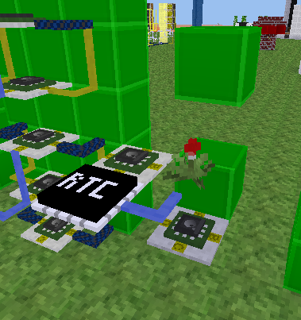

Mesecons Laboratory
Adventures in digital circuitry.
Clock
14/4/13 - Uberi
Difficulty level:


 (4/10)
(4/10)
This article assumes you have the Digilines mod, which I generally consider a de facto part of Mesecons. It is still possible to complete it without this mod, but replacing its functionality with fancy wiring is an exercise left to the reader.
Don't you ever wish you had a clock in-game while playing Minetest, just to keep track of all the time you're wasting? Need a timepiece for the top of the main tower in town hall? Let's build one!
This clock will never need adjustment and works even if you use the /time command! This is made possible using the Digilines RTC.
Step 1: Design
Before we build anything, let me explain how the Digilines RTC works.
The RTC, short for Real Time Clock, is a Digilines device that allows you to obtain the current (in-game) time of day. How does it work? When you plonk an RTC down, you can right-click it to set the channel:
Now, whenever you send a digilines signal on that channel, using "GET" as the message, it will in turn send a digilines signal on that same channel, but with the current time as the message.
However, this time isn't just in a standard time format; it's represented as fractional hours. Let's take a look:
/time 0 is midnight. /time 500 is half-past midnight. /time 7250 is around 7:15 AM. /time 1500 is around 3 o'clock PM.
The thousands place and above denotes the hour in 24-hour notation, while the hundreds place and below denotes a fraction of that hour.
When we get to the programming section, there will be a more detailed overview of how to deal with coverting this time into the one we're more used to.
Step 2: Layout
We want the clock to look as nice as possible. Therefore, we start from the display:
Well this is a nice display and all, but there's one big problem with it - it doesn't display anything! Let's remedy that situation:

Each digit display has been wired up to a standard seven segment driver supporting the digits 0-9, since that's all we really need. Note that port A faces the lightstone and port C faces the camera in the image above. While the machine can be built in any orientation, I will assume we are using the one shown. Changing the Luacontroller code to work with other orientations is an exercise left for the reader.
For the sake of completeness, here is the code inside each Luacontroller on the leftmost display (the ones column of the minutes):
Top:
if event.type == "program" then
mem.accept = {[0]=true, [2]=true, [3]=true, [5]=true, [6]=true, [7]=true, [8]=true, [9]=true}
elseif event.type == "digiline" then
port.a = mem.accept[event.msg.minute]
port.b, port.d = port.a, port.a
end
Second from top:
if event.type == "program" then
mem.accept1 = {[0]=true, [4]=true, [5]=true, [6]=true, [8]=true, [9]=true}
mem.accept2 = {[0]=true, [1]=true, [2]=true, [3]=true, [4]=true, [7]=true, [8]=true, [9]=true}
elseif event.type == "digiline" then
port.b = mem.accept1[event.msg.minute]
port.d = mem.accept2[event.msg.minute]
end
Middle:
if event.type == "program" then
mem.accept = {[2]=true, [3]=true, [4]=true, [5]=true, [6]=true, [8]=true, [9]=true}
elseif event.type == "digiline" then
port.a = mem.accept[event.msg.minute]
port.b, port.d = port.a, port.a
end
Second from bottom:
if event.type == "program" then
mem.accept1 = {[0]=true, [2]=true, [6]=true, [8]=true}
mem.accept2 = {[0]=true, [1]=true, [3]=true, [4]=true, [5]=true, [6]=true, [7]=true, [8]=true, [9]=true}
elseif event.type == "digiline" then
port.b = mem.accept1[event.msg.minute]
port.d = mem.accept2[event.msg.minute]
end
Bottom:
if event.type == "program" then
mem.accept = {[0]=true, [2]=true, [3]=true, [5]=true, [6]=true, [8]=true, [9]=true}
elseif event.type == "digiline" then
port.a = mem.accept[event.msg.minute]
port.b, port.d = port.a, port.a
end
The other displays have nearly the exact same code, except event.msg.minute is replaced with event.msg.tenminute, event.msg.hour, and event.msg.tenhour, from left to right for each digit display.
Step 3: Construction
Now we can wire up the timekeeping unit. First, a Digilines RTC is connected to a Luacontroller that polls it when we need it to:
The RTC, unsuprisingly, is set to the channel "clock".
The code inside the Luacontroller is quite simple:
if event.type == "on" then
digiline_send("clock", "GET")
end
Whenever any of the pins are turned on, it polls the RTC for the current time.
The RTC can now be wired to another Luacontroller that does the calculations to convert the time into the hours and minutes most people are familiar with:
A blinky plant is a very reliable oscillator. Luacontrollers and microcontrollers have delay capabilities, but they will not last past a server restart. Using a blinky plant ensures the clock will work regardless of the conditions it is in.
The code inside the lower Luacontroller calculates the number of hours and minutes from the time value, and turns them into individual digits to be displayed:
if event.channel == "clock" then
time = event.msg * 24
hour = math.floor(time)
tenhour, hour = math.floor(hour / 10), hour % 10
time = (time % 1) * 60
minute = math.floor(time)
tenminute, minute = math.floor(minute / 10), minute % 10
digiline_send("", {tenhour=tenhour, hour=hour, tenminute=tenminute, minute=minute})
end
After calculations, it sends off a Digilines signal with all the digits packed into a table. The field names should seem rather familiar - they are the same ones that we used in the displays!
The only thing left to do is ensure the Digilines signal reaches all the displays:
The displays update automatically as time passes by. It works!
Step 4: Improvements
The clock as it is right now doesn't look very good, with all those wires showing. How about an enclosure?
Or perhaps a blimp?
After all, you can't have a world without blimps.
Downloads
All files are available under the same license as this article. The WE schematics can be loaded using the //load command in WorldEdit.
Clock in WorldEdit format (WE)

This work is licensed under a Creative Commons Attribution-ShareAlike 3.0 Unported License.